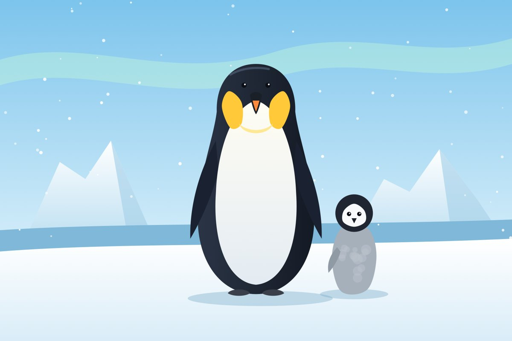

Крути пальцем · щипок для зума · на телефоне доступна кнопка AR
Антарктида · Зоомир
Императорский пингвин
Aptenodytes forsteri
Самый крупный пингвин. Зимует там, где морозы ниже −50 °C.
Ростдо 1,2 м
Весдо 40 кг
Ныряетглубже 500 м
Интересные факты
- Самец около двух месяцев держит яйцо на лапах под складкой кожи и всё это время ничего не ест.
- В метель пингвины сбиваются в плотную толпу и по очереди меняются местами: кто с краю, тот идёт греться в центр.
- Ныряет глубже 500 метров и может задерживать дыхание больше 20 минут.
